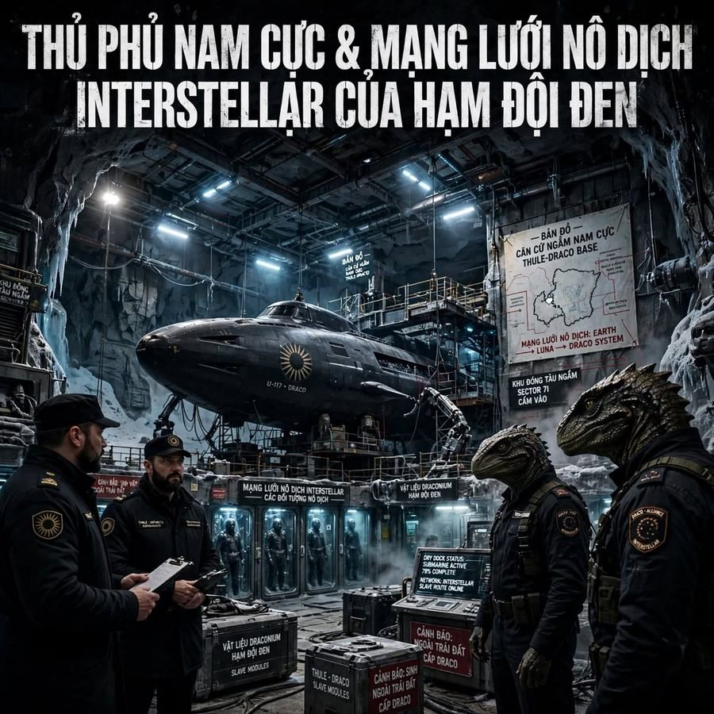
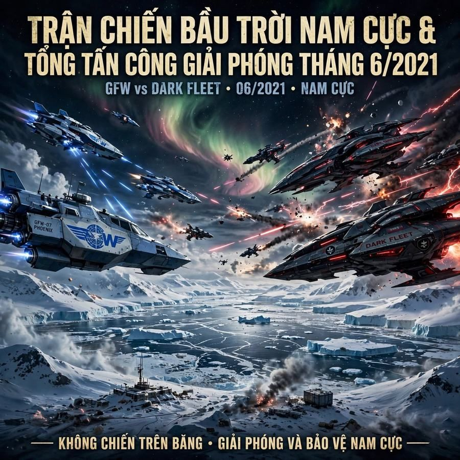
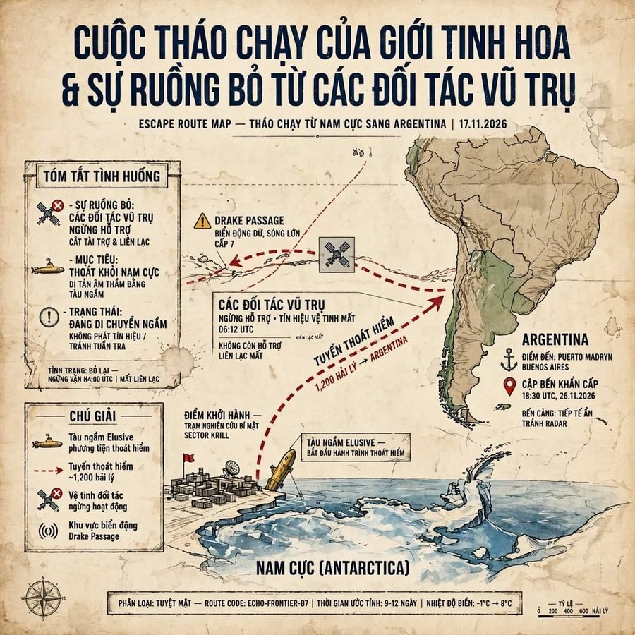
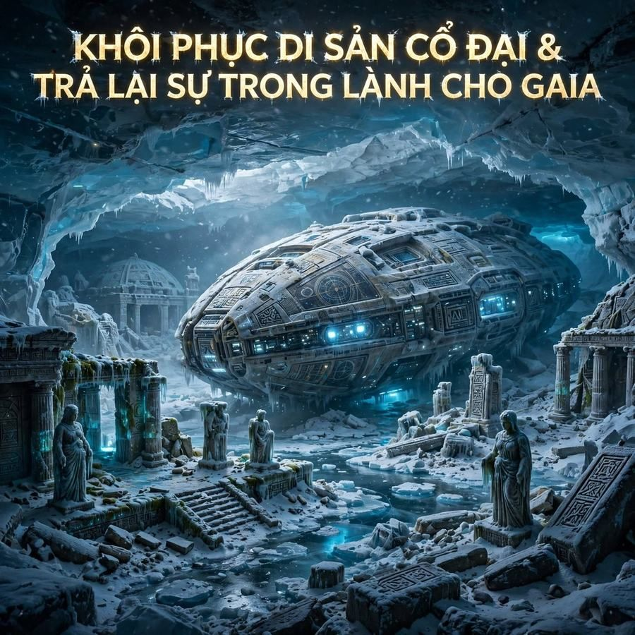
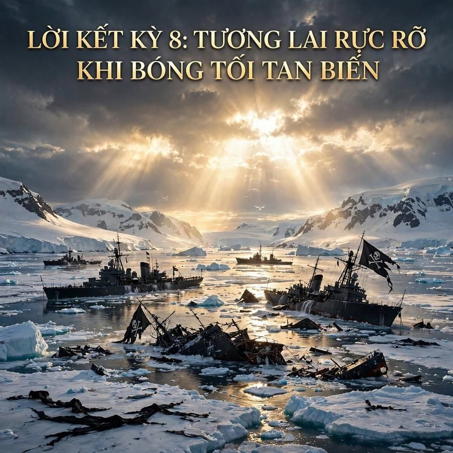

Trang chủ / Chuyên đề 5: Chương Trình Không Gian Bí Mật / Kỳ 48
Chuyên đề 5 · Kỳ 48 / 90
TRẬN CHIẾN GIẢI PHÓNG NAM CỰC & SỰ SỤP ĐỔ CỦA HẠM ĐỘI ĐEN (DARK FLEET)

Ở Kỳ 7, chúng ta đã cùng nhau chứng kiến bước ngoặt lịch sử trên bề mặt khi Lực lượng Không gian Hoa Kỳ (USSF) chính thức ra đời, đánh dấu giai đoạn mở màn cho quá trình bạch nhật hóa giải mật (Full Disclosure) và sự chuyển dịch liên minh sang Liên Đoàn Thế Giới Thiên Hà (GFW). Hôm nay, chúng ta sẽ quay trở lại với trung tâm quyền lực đen tối nhất của các chương trình không gian bí mật phân rã: Đại lục Nam Cực — nơi từng là thủ phủ ẩn nấp của lực lượng Hạm Đội Đen (Dark Fleet / Nachtwaffen). Hạm Đội Đen đã biến hệ thống hang động ngầm dưới lòng băng Nam Cực thành trung tâm điều hành du hành liên sao và buôn bán nô dịch ngoài vũ trụ ra sao? Cuộc đụng độ nảy lửa trên bầu trời Nam Cực giữa Lực lượng Liên minh Trái Đất phối hợp với Liên Đoàn Thế Giới Thiên Hà và phe bóng tối đã diễn ra tàn khốc thế nào? Sự thật về cuộc tháo chạy hoảng loạn của giới tinh hoa ngầm và các nhân sự nói tiếng Đức sang Nam Mỹ (Argentina) ra sao? Và sự sụp đổ vĩnh viễn của Hạm Đội Đen mang lại ý nghĩa lịch sử gì cho việc giải phóng toàn bộ Hệ Mặt Trời?
1. THỦ PHỦ NAM CỰC & MẠNG LƯỚI NÔ DỊCH INTERSTELLAR CỦA HẠM ĐỘI ĐEN
Trong nhiều thập kỷ, bên dưới lớp băng Nam Cực là nơi vận hành một mạng lưới cơ sở hạ tầng ngầm siêu hiện đại nhưng vô cùng tàn khốc. A. Liên Minh Bóng Tối Tại Căn Cứ Ngầm Nam Cực
- Sự Kết Hợp Giữa Thule Và Bò Sát Draco: Nằm sâu dưới lòng băng Nam Cực, nhóm Thule Đức Quốc xã đã hợp tác chặt chẽ với Đế chế Bò sát Ciakahrr/Draco, Tập thể Orion Grey và Altair để thành lập Liên minh Nam Cực.
- Thành Cụm Căn Cứ Quân Sự & Xưởng Đóng Tàu: Với sự giúp đỡ của phe Bò sát bản địa, họ đã xây dựng các căn cứ ngầm kiên cố trong các vòm hang băng ấm, chế tạo các hạm đội chiến hạm kháng hấp dẫn tinh vi phục vụ cho các chiến dịch chinh phạt liên sao. B. Trung Tâm Giao Thương Nô Dịch Thiên Hà
- Sân Bay Vũ Trụ Nô Dịch: Các căn cứ ngầm Nam Cực đóng vai trò là một trong những cảng hàng không vũ trụ chính cho các hoạt động buôn bán lao động nô dịch ngoài không gian.
- Trạm Trung Chuyển Lên Mặt Trăng & Sao Hỏa: Hàng ngàn nạn nhân bị bắt cóc từ bề mặt Trái Đất đã bị lưu giữ tại các cơ sở ngầm Nam Cực trước khi bị vận chuyển đến các thuộc địa trên Mặt Trăng, Sao Hỏa hoặc đưa đi giao thương tới các hệ sao khác trong dải Ngân Hà.

2. TRẬN CHIẾN BẦU TRỜI NAM CỰC & TỔNG TẤN CÔNG GIẢI PHÓNG (THÁNG
6/2021) Thực tại thống trị của Hạm Đội Đen tại Nam Cực không thể kéo dài mãi khi Lực lượng Ánh Sáng quyết định phát động chiến dịch quy mô toàn cầu. A. Cuộc Đụng Độ Nảy Lửa Trên Bầu Trời Nam Cực
- Chiến Tranh Không Gian Ngoài Quỹ Đạo: Các trận chiến ác liệt đã bùng nổ trên bầu trời Nam Cực giữa hạm đội của Liên minh Trái Đất phối hợp với Liên Đoàn Thế Giới Thiên Hà (GFW) và các chiến hạm chóp nón thuộc Hạm Đội Đen.
- Đập Tan Lá Chắn Tần Số: Lực lượng Liên minh đã sử dụng các loại vũ khí năng lượng cao tần và sóng vô hướng để đánh nổ ma trận phòng thủ, làm sụp đổ hệ thống an ninh ngầm của đối phương. B. Chiến Thắng Lịch Sử Ngày 6 Tháng 6 Năm 2021
- Giải Phóng Hoàn Toàn Nam Cực: Ngày 6 tháng 6 năm 2021, Lực lượng Không gian Liên minh Trái Đất cùng GFW đã chính thức đánh bại và quét sạch các đồn lũy nòng cốt của Hạm Đội Đen tại Nam Cực.
- Niêm Phong Các Cửa Ngõ Tiêu Cực: Toàn bộ các phòng thí nghiệm thí nghiệm sinh học tiêu cực bị phá hủy, giải cứu các nạn nhân bị giam giữ và lấy lại quyền kiểm soát các Cổng Sao ngầm.

3. CUỘC THÁO CHẠY CỦA GIỚI TINH HOA & SỰ RỦỎNG BỎ TỪ CÁC ĐỐI TÁC VŨ TRỤ
Sự sụp đổ của các căn cứ Nam Cực đã tạo ra một làn sóng tháo cháo chưa từng có trong bộ máy kiểm soát ngầm. A. Làn Sóng Di Cư Khẩn Cấp Sang Nam Mỹ
- Rút Lui Khỏi Nam Cực: Trước sức ép quân sự mãnh liệt từ Liên minh, một số lượng lớn nhân sự ngầm và các sĩ quan nói tiếng Đức đã vội vã tháo chạy khỏi Nam Cực.
- Tháo Chạy Về Argentina: Các lộ trình di cư khẩn cấp đã đưa các lực lượng này rút về khu vực Nam Mỹ (đặc biệt là Argentina) để lẩn nấp trước sự sụp đổ hoàn toàn của hệ thống. B. Sự Cắt Đứt Liên Hệ Từ Hệ Sao Aldebaran
- Bị Đồng Minh Tự Tẩy Tẩy: Ngay cả trụ sở chính của Hạm Đội Đen tại hệ sao Aldebaran cũng bắt đầu cắt đứt liên lạc và tách rời khỏi nhóm Nam Cực để tránh bị ảnh hưởng liên đới.
- Hạm Đội Đen Bị Cô Lập Hoàn Toàn: Sự ruồng bỏ từ các đối tác ngoài hành tinh đã khiến Hạm Đội Đen hoàn toàn mất đi chỗ dựa hậu phương, đẩy lực lượng lính đánh thuê này vào con đường tan rã vĩnh viễn.

4. KHÔI PHÚC DI SẢN CỔ ĐẠI & TRẢ LẠI SỰ TRONG LÀNH CHO GAIA
Việc giải phóng Nam Cực không chỉ xóa bỏ một ổ bóng tối mà còn mở ra kho báu tri thức cổ đại của hành tinh Trái Đất. A. Bảo Tồn Tàn Tích Văn Minh Cổ Đại (Antarctic Atlantis)
- Khai Quật Di Sản Atlantis Nam Cực: Bên dưới lớp băng Nam Cực là tàn tích của các đại đô thị cổ đại và các con tàu Hòm Không Gian (Space Arks) do Các Đấng Sáng Lập để lại từ hàng chục ngàn năm trước.
- Chuyển Giao Cho Lực Lượng Hòa Bình: Các tàn tích này hiện đang được quản lý bởi Liên minh Trái Đất và GFW, chuẩn bị cho lộ trình giải mật tri thức công khai cho nhân loại. B. Cân Bằng Lại Mạng Lưới Năng LƯỢNG Địa Từ
- Làm Sạch Luân Xa Trái Đất: Sự sụp đổ của ma trận Nam Cực đã loại bỏ nút thắt năng lượng tiêu cực lớn nhất ở Cực Nam, trả lại sự trong lành và ổn định cho dải từ trường toàn cầu của hành tinh Gaia!

5. LỜI KẾT KỲ 8: TƯƠNG LAI RỰC RỠ KHI BÓNG TỐI TAN BIẾN
Kỳ 8 của chuyên đề 5 khép lại mang đến chiến thắng bừng sáng cho nhân loại Trái Đất:
- Hạm Đội Đen Đã Vĩnh Viễn Đi Vào Lịch Sử: Lực lượng lính đánh thuê tàn khốc nhất từng gieo rắc nỗi sợ hãi ngoài vũ trụ đã bị đánh bại hoàn toàn tại Nam Cực.
- Hệ Mặt Trời Đang Tiến Gần Ngày Tự Do: Sự giải phóng Nam Cực là mắt xích quyết định, mở đường cho cuộc giải phóng toàn diện tất cả các căn cứ ngầm trên Sao Hỏa và Hệ Mặt Trời!

Bình luận
Chia sẻ cảm nhận, câu hỏi hoặc tài liệu đối chiếu. Không cần đăng nhập.
Đang tải…